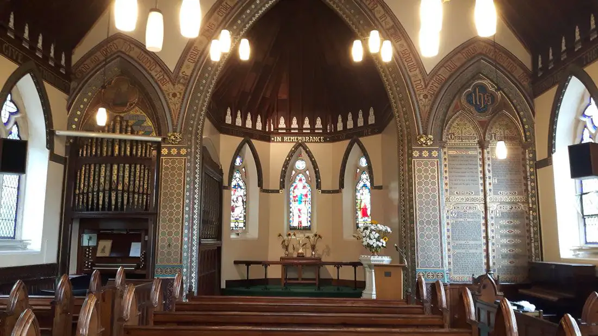

A Warm Welcome Awaits You at St Mary's
We're a small, friendly Methodist church with a big heart — a community where everyone belongs. Whether you're seeking faith, community, or simply a friendly face, our doors are open to you.
Join Us for Worship
Services every week — all are welcome, no prior experience needed.
Weekly Services
Everyone Is Welcome Here
St Mary's is part of the Bramhall & Wythenshawe Methodist Circuit and the North West of England District. We're a community of all ages, backgrounds, and walks of life — united by faith, friendship, and a commitment to serving our local area.
Whether you're a long-time Christian or simply curious, whether you come alone or with family — you'll find a genuinely warm welcome at St Mary's.
Learn More About UsUpcoming Highlights
A taste of what's coming up — there's always something happening at St Mary's.
Easter Celebration Service
A joyful family service celebrating Easter with hymns, reflections, and activities for children.
Spring Community Fayre
Stalls, refreshments, games, and good company — a lovely afternoon for all the family.
Junior Church: Creation Week
Arts, crafts, stories, and games — a fun session exploring Creation for children aged 4–11.
What our community says
"From the moment I walked through the door, I felt completely at home. Everyone was so warm and welcoming — I've never looked back. This little church means the world to me now."
— Margaret, congregation member for 12 years
Ready to Visit?
We'd love to see you! Come along on Sunday morning or visit our coffee drop-in on Friday. No need to book — just turn up.